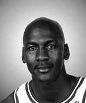

Michael JORDAN
Michael Jeffrey Jordan (born February 17, 1963), also known by his initials MJ, is an American businessman and former professional basketball player. He is the principal owner and chairman of the Charlotte Hornets of the National Basketball Association (NBA) and of 23XI Racing in the NASCAR Cup Series. He played 15 seasons in the NBA, winning six championships with the Chicago Bulls. His biography on the official NBA website states: "By acclamation, Michael Jordan is the greatest basketball player of all time." He was integral in helping to popularize the NBA around the world in the 1980s and 1990s, becoming a global cultural icon in the process. Jordan's individual accolades and accomplishments include six NBA Finals Most Valuable Player (MVP) Awards, ten scoring titles (both all-time records), five MVP Awards, ten All-NBA First Team designations, nine All-Defensive First Team honors, fourteen NBA All-Star Game selections, three All-Star Game MVP Awards, three steals titles, and the 1988 NBA Defensive Player of the Year Award. He holds the NBA records for career regular season scoring average (30.12 points per game) and career playoff scoring average (33.45 points per game). In 1999, he was named the 20th century's greatest North American athlete by ESPN, and was second to Babe Ruth on the Associated Press' list of athletes of the century. Jordan was twice inducted into the Naismith Memorial Basketball Hall of Fame, once in 2009 for his individual career and again in 2010 as part of the 1992 United States men's Olympic basketball team ("The Dream Team"). He became a member of the FIBA Hall of Fame in 2015.